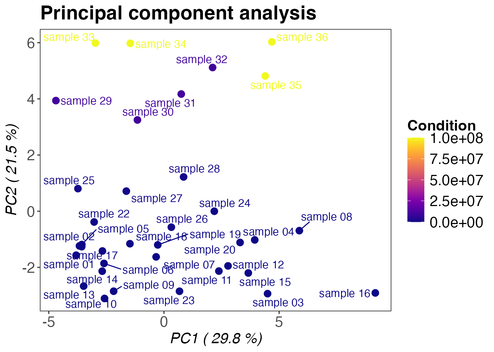

Dose-Response Data Analysis Workflow
Jan-Philipp Quast
2026-01-14
Source:vignettes/data_analysis_dose_response_workflow.Rmd
data_analysis_dose_response_workflow.RmdIntroduction
This vignette will take you through all important steps for the analysis of dose-response experiments with protti. For experiments with treatment titrations (i.e. samples treated with different amounts of the same compound, protein, metabolite, element, ion, etc.) you can fit sigmoidal log-logistic regression curves to the data and determine significantly changing precursors, peptides or proteins based on Pearson correlation and ANOVA q-value.
Before analysing your data please ensure that it is of sufficient quality by using protti’s quality control functions (see Quality control (QC) workflow) If you would like to compare a control condition with one treatment condition (or multiple unrelated treatments) you can check out the data analysis vignette for single dose treatment data. For help with data input please click here.
A typical dose-response experiment contains multiple samples that were treated with different amounts of e.g. a drug. Replicates of samples treated with the same dose make up a condition. Commonly, the first concentration is 0 (i.e. the control, in which treatment is with the solvent of the drug). Dose-response treatments require a minimal number of treatments to fit curves with sufficient quality. For analysis with protti at least 5 different conditions should be present. Another consideration for your experiment is the range of concentrations. They should not be too close together since effects are usually best identified over a larger concentration range. But you should make sure not to space them out too far. It is generally advised to space them evenly on a logarithmic scale of the base 10 or (Euler’s number). You can also include steps in between e.g. 100, 500, 1000 or 100, 200, 1000 for a log10 scale. It is advisable to use a rather broad concentration range for an experiment in which you do not know what to expect.
protti fits four-parameter log-logistic
dose-response models to your data. It utilizes the drm()
and LL.4() functions from the drc
package for this. You can also select a non logarithmic model using the
L.4() function in case your data does not follow a
log-logistic but a logistic regression.
For limited proteolysis-coupled to mass spectrometry (LiP-MS) data, dose-response curves have been used previously for the identification of drug binding sites in complex proteomes (Piazza 2020). Since LiP-MS data is analysed on the peptide or precursor* level, using additional information about peptide behaviour from multiple conditions reduces false discovery rate.
A peptide precursor is the actual molecular unit that was detected on the mass spectrometer. This is a peptide with one specific charge state and its modification(s).
Getting started
Before starting the analysis of your data you need to load
protti and additional packages used for the analysis.
As described on the main page of
protti, the tidyverse package collection works
well together with the rest of the package, by design. You can load
packages after you installed them with the library()
function.
Loading data
For this vignette we use a subset of proteins from an experiment of HeLa cell lysates treated with 9 doses of rapamycin followed by LiP-MS. Rapamycin forms a complex with the FK506-binding protein (FKBP12) that binds and allosterically inhibits mTORC1 (Sabatini 1994). Since rapamycin is known to be a highly specific drug, we expect to identify FKBP12 as one of the only interacting proteins.
We included 39 random proteins and FKBP12 in this sample data set. The proteins were sampled using the seed 123.
If you want to read your data into R, we suggest using the
read_protti() function. This function is a wrapper around
the fast fread() function from the data.table
package and the clean_names() function from the janitor
package. This will allow you to not only load your data into R very
fast, but also to clean up the column names into lower snake case. This
will make it easier to remember them and to use them in your data
analysis. To ensure that your data input has the right format you can
check out our input
preparation vignette.
# Load data
rapamycin_dose_response <- read_protti("your_data.csv")In this example the rapamycin dose-response data set is included in
protti and you can easily use it by calling the data()
function. This will load the data into your R session.
utils::data("rapamycin_dose_response")Cleaning data
After loading data into R we would like to clean it up to remove rows
that are problematic for our analysis. The
rapamycin_dose_response data is based on a report from Spectronaut™. It
includes convenient columns that label peptides as being decoys
(eg_is_decoy). Other software reports might have similar
columns that should be checked. MaxQuant for example includes
information on contaminating proteins that you should remove prior to
data analysis. In this case we would like to remove any peptides left in
the report that are decoys (used for false discovery rate estimation).
It is a good practice to just run this even though decoys are usually
already filtered out.
Due to the fact that with increasing raw intensities
(fg_quantity) also variances increase, statistical tests
would have a bias towards lower intense peptides or proteins. Therefore
you should log2 transform your data to correct for this mean-variance
relationship. We do this by using dplyr’s
mutate() together with log2().
In addition to filtering and log2 transformation it is also advised
to normalise your data to equal out small differences in overall sample
intensities that result from unequal sample concentrations.
protti provides the normalise() function
for this purpose. For this example we will use median normalisation
(method = "median"). This function generates an additional
column called normalised_intensity_log2 that contains the
normalised intensities.
Note: If your search tool already normalised your data you should not normalise it again.
In addition to the removal of decoys we also remove any
non-proteotypic peptides (pep_is_proteotypic) from our
analysis. This is specific for the analysis of LiP-MS data. If a peptide
is non-proteotypic it is part of two or more proteins. If we detect a
change in non-proteotypic peptides it is not possible to clearly assign
which of the proteins it is coming from.
# Filter, log2 transform and normalise data
data_normalised <- rapamycin_dose_response %>%
filter(eg_is_decoy == FALSE) %>%
mutate(intensity_log2 = log2(fg_quantity)) %>%
normalise(
sample = r_file_name,
intensity_log2 = intensity_log2,
method = "median"
) %>%
filter(pep_is_proteotypic == TRUE)It is also useful to check the intensity distribution of all
precursors with the protti function
qc_intensity_distribution(). Usually, the distribution of
intensities is a skewed normal distribution of values missing on the
left flank. This is due to the detection limit of the mass spectrometer.
The probability of not observing a value gets higher with decreasing
intensities.
For experiments measured in data independent acquisition (DIA) mode, it is good to filter out very low intensity values that are not part of the distribution. These values are likely false assignments of peaks. If you look closely you can see a small peak around 0 corresponding to these values. In the case of our distribution we could chose a cutoff at a log2 intensity of 5, which corresponds to a raw intensity of 32.
qc_intensity_distribution(
data = data_normalised,
grouping = eg_precursor_id,
intensity = normalised_intensity_log2,
plot_style = "histogram"
)
Clustering of samples
Before we fit dose-response models to our data, we can check how
samples cluster. Ideally, samples that belong to the same treatment
concentration cluster together. A common way that you can analyse this
is correlation based hierachical clustering using the
qc_sample_correlation() function from
protti. The correlation of samples is calculated based
on the correlation of precursor (or peptide/protein) intensities. By
default qc_sample_correlation() uses Spearman correlation,
however you can change that to any correlation supported by the
cor() function.
Note: Many of protti’s plotting functions also
have the option to display an interactive version of the plot with an
interactive argument.
qc_sample_correlation(
data = data_normalised,
sample = r_file_name,
grouping = eg_precursor_id,
intensity_log2 = normalised_intensity_log2,
condition = r_condition
)
For our rapamycin data set we cannot identify any clear sample clustering based on correlation, because only a small subset of proteins was selected for this example. Furthermore, data sets in which only a few changes are expected commonly do not cluster nicely. This is because precursors/peptides/proteins have very similar intensity values across conditions and clustering is in this case based on variance. In case of more global changes samples should usually cluster nicely.
In addition to correlation based clustering a principal component
analysis can be performed using the protti function
qc_pca(). Similar to before, good clustering is usually
dependent on the amount of changing precursors (or
peptides/proteins).
qc_pca(
data = data_normalised,
sample = r_file_name,
grouping = eg_precursor_id,
intensity = normalised_intensity_log2,
condition = r_condition
)
Fitting dose-response curves
The main part of a dose-response data analysis is the
fit_drc_4p() function. It fits four-parameter log-logistic
dose-response curves for every precursor (or peptide/protein) with the
following equation:
is the dependent variable
is the independen variable
is the minimum value that can be obtained
is the maximum value that can be obtained
is the point of inflection
is the Hill’s coefficient (e.g. the negative slope at the inflection
point)
The output of fit_drc_4p() provides extensive
information on the goodness of fit. Furthermore, the function filters
and ranks fits based on several criteria which include completeness of
data and a significance cutoff based on an adjusted p-value obtained
from ANOVA. For details about the filtering steps you can read the
function documentation by calling ?fit_drc_4p. If you only
care about your potential hits (and exclude precursors/peptides/proteins
that do not pass the filtering e.g. due to too few observations), you
can choose filter = "pre", which filters the data before
model fitting. This speeds up the process because less models need to be
fit. If you want to perform enrichment analysis later on you should keep
the default filter = "post". This will fit all possible
models and then only annotate models based on whether they passed or
failed the filtering step (passed_filter).
Since protti version 0.8.0 we recommend
you use the n_replicate_completeness and
n_condition_completeness arguments in order to define
cutoffs for completeness of replicates in a given number of conditions.
This makes the output of the function reproducible independent of the
input data. With the provided cutoffs below we define that at least 2
replicates need to be detected in 4 conditions. Any precursor with less
completeness than that will not be considered and removed from the
data.
fit <- data_normalised %>%
fit_drc_4p(
sample = r_file_name,
grouping = eg_precursor_id,
response = normalised_intensity_log2,
dose = r_condition,
filter = "post",
n_replicate_completeness = 2, # specifiy this based on your data and cutoff criteria
n_condition_completeness = 4, # specifiy this based on your data and cutoff criteria
retain_columns = c(pg_protein_accessions)
)
# make sure to retain columns that you need later but that are not part of the functionIf you have to fit many models this function may take about an hour
or longer. If you have the computational resources you can speed this up
by using parallel_fit_drc_4p(), a parallelised version of
this function.
Note: Keep in mind that by spreading the model fitting over multiple cores, more memory than usual is needed. Furthermore, using the maximal number of available cores may not be the most efficient, because it takes time to copy the data to and from each core - this process will not be performed in parallel. Therefore, it is advised that the run time on each core is at least as long as the time to set up (data transfer, environment preparation etc.) all cores.
# setup of cores. Make sure you have the future package installed
future::plan(future::multisession, workers = 3)
# fit models in parallel
parallel_fit <- data_normalised %>%
parallel_fit_drc_4p(
sample = r_file_name,
grouping = eg_precursor_id,
response = normalised_intensity_log2,
dose = r_condition,
retain_columns = c(pg_protein_accessions),
n_cores = 3,
n_replicate_completeness = 2, # specifiy this based on your data and cutoff criteria
n_condition_completeness = 4, # specifiy this based on your data and cutoff criteria
)
# remove workers again after you are done
future::plan(future::sequential)If we examine all precursors based on their rank (calculated from correlation and ANOVA q-value), we can see that as expected most of them are FKBP12 (P62942) peptides. One benefit of analysing LiP-MS data on the precursor level (rather than peptide level) is that multiple lines of evidence for a change in the specific peptide can be used (we have data for each different charge and modification state). Therefore, it is always good to check if there are other precursors of a good scoring peptide that do not show any regulation at all. This would mean that the reason for the observed response is not based on a biological effect.
| rank | score | eg_precursor_id | pg_protein_accessions | anova_adj_pval | correlation | ec_50 |
|---|---|---|---|---|---|---|
| 1 | 0.912 | RGQTC[Carbamidomethyl (C)]VVHYTGMLEDGK.3 | P62942 | 4.73e-14 | 0.948 | 3.2e+05 |
| 2 | 0.885 | GWEEGVAQMSVGQR.2 | P62942 | 1.08e-13 | 0.947 | 4.7e+05 |
| 3 | 0.884 | VFDVELLKLE.2 | P62942 | 2.26e-12 | 0.967 | 3.6e+06 |
| 4 | 0.797 | LVFDVELLK.2 | P62942 | 7.20e-11 | 0.959 | 4.4e+06 |
| 5 | 0.783 | GWEEGVAQ.1 | P62942 | 2.55e-09 | 0.976 | 7.8e+06 |
| 6 | 0.770 | RGQTC[Carbamidomethyl (C)]VVHYTGMLEDGK.4 | P62942 | 1.40e-12 | 0.926 | 5.7e+05 |
| 7 | 0.703 | YTGMLEDGK.2 | P62942 | 1.32e-09 | 0.945 | 3.5e+06 |
| 8 | 0.692 | RGQTC[Carbamidomethyl (C)]VVH.2 | P62942 | 1.45e-09 | 0.943 | 7.7e+06 |
| 9 | 0.681 | GWEEGVAQMSVGQR.3 | P62942 | 2.67e-09 | 0.944 | 7.7e+05 |
| 10 | 0.673 | LTISPDYAYGAT.2 | P62942 | 5.22e-09 | 0.946 | 3.0e+06 |
| 11 | 0.621 | LVFDVELLKLE.2 | P62942 | 1.30e-08 | 0.934 | 5.2e+06 |
| 12 | 0.491 | VVHYTGMLEDGK.3 | P62942 | 4.25e-08 | 0.900 | 6.7e+06 |
| 13 | 0.449 | RGQTC[Carbamidomethyl (C)]VVHYTGM[Oxidation (M)]LEDGK.3 | P62942 | 9.10e-03 | 0.954 | 1.2e+06 |
| 14 | 0.436 | VFDVELLK.2 | P62942 | 4.70e-06 | 0.908 | 3.1e+06 |
| 15 | 0.366 | VVHYTGMLEDGK.2 | P62942 | 1.63e-06 | 0.880 | 7.4e+06 |
| 16 | 0.154 | GWEEGVAQM.2 | P62942 | 4.14e-04 | 0.843 | 1.6e+06 |
| 17 | 0.132 | DTVATQLSEAVDATR.2 | O60664 | 5.80e-04 | 0.838 | 4.8e+07 |
| 18 | 0.000 | DYFEEYGKIDTIEIITDR.3 | P22626 | 2.27e-02 | 0.816 | 3.2e+07 |
Model fit plotting
After model fitting, you can easily visualise model fits by plotting
them with the drc_4p_plot() function. You can provide one
or more precursor IDs to the targets argument or just
return plots for all precursors with targets = "all". Make
sure that the number of plots is reasonable to return within R. You can
also directly export your plots by setting
export = TRUE.
Note: The output of fit_drc_4p() includes two
columns with data frames containing the model and original data points
required for the plot. These data frames contain the original names for
dose and response that you provided to
fit_drc_4p().
# Model plotting
drc_4p_plot(fit,
grouping = eg_precursor_id,
dose = r_condition,
response = normalised_intensity_log2,
targets = "_VFDVELLKLE_.2",
unit = "pM",
x_axis_limits = c(10, 1e+08),
export = FALSE
)
#> $`_VFDVELLKLE_.2 (correlation = 0.97, EC50 = 3601983)`
There are additional arguments that help you customise your plot. You
can for example specify the axis limits with x_axis_limits.
This should generally always be set to the lowest non-zero and highest
concentration x_axis_limits = c(10, 1e+08). Like this you
can more easily see if extreme concentrations are completely missing
from the curve. The colours argument allows you to specify
your own colours for the points, confidence interval and curve.
Further analysis
After models are fit, you can have a deeper look into the hits you obtained. protti provides several functions that help you to identify patterns in your data.
You can test your data set for gene ontology (GO) term enrichment
(calculate_go_enrichment()). Alternatively, pathway
annotations provided in the KEGG database can be used to test for
pathway enrichments (calculate_kegg_enrichment()).
If you know which proteins bind or interact with your specific
treatment, you can provide your own list of true positive hits and check
if these are enriched in your significant hits by using
protti’s calculate_treatment_enrichment()
function. For our LiP-MS experiment using rapamycin we are probing
direct interaction with proteins in contrast to functional effects. The
only protein that rapamycin is known to bind to is FKBP12 and testing
the significance of enrichment for a single or even a few proteins is
not appropriate. However, testing for enrichment is especially useful if
your treatment affects many proteins, since it can help you to reduce
the complexity of your result.
The STRING database
provides a good resource for the analysis of protein interaction
networks. It is often very useful to check for interactions within your
significant hits. For LiP-MS data this sometimes explains why proteins
that do not directly interact with your treatment are still
significantly affected. With analyse_functional_network(),
protti provides a useful wrapper around some STRINGdb
package functions.
Annotation of data
protti has several functions for fetching database
information. One commonly used database in the proteomics community is
UniProt. By providing the fetch_uniprot() function with a
character vector of your protein IDs, you can fetch additional
information about the proteins. These include names, IDs from other
databases, gene ontology annotations, information about the active
metabolite and metal binding sites, protein length and sequence. You can
freely select which information you are most interested in by providing
it to the columns arguments of the
fetch_uniprot() function based on the information they provide for
download.
Furthermore, we will add a passed_filter column to the
data that contains TRUE or FALSE information based on if a precursor
passed the filtering criterion defined in the fit_drc_4p()
function. This is the case if the peptide was assigned a rank.
# fetching of UniProt information
unis <- unique(fit$pg_protein_accessions)
uniprot <- fetch_uniprot(unis)
# annotation of fit data based on information from UniProt
fit_annotated <- fit %>%
# columns containing proteins IDs are named differently
left_join(uniprot, by = c("pg_protein_accessions" = "accession")) %>%
# mark peptides that pass the filtering
mutate(passed_filter = !is.na(rank)) %>%
# create new column with prior knowledge about binding partners of treatment
mutate(binds_treatment = pg_protein_accessions == "P62942")Enrichment and network analysis
As mentioned earlier, for our test data set, enrichment or network analysis are not useful, since we only use a very small random subset of the complete data set and rapamycin only interacts with FKBP12.
Nevertheless, we will demonstrate below how you could use some additional functions on your own data.
### GO enrichment using "molecular function" annotation from UniProt
calculate_go_enrichment(fit_annotated,
protein_id = pg_protein_accessions,
is_significant = passed_filter,
go_annotations_uniprot = go_f
) # column obtained from UniProt
### KEGG pathway enrichment
# First you need to load KEGG pathway annotations from the KEGG database
# for your specific organism of interest. In this case HeLa cells were
# used, therefore the organism of interest is homo sapiens (hsa)
kegg <- fetch_kegg(species = "hsa")
# Next we need to annotate our data with KEGG pathway IDs and perform enrichment analysis
fit %>%
# columns containing proteins IDs are named differently
left_join(kegg, by = c("pg_protein_accessions" = "uniprot_id")) %>%
calculate_kegg_enrichment(
protein_id = pg_protein_accessions,
is_significant = passed_filter,
pathway_id = pathway_id, # column name from kegg data frame
pathway_name = pathway_name
) # column name from kegg data frame
### Treatment enrichment analysis
calculate_treatment_enrichment(fit_annotated,
protein_id = pg_protein_accessions,
is_significant = passed_filter,
binds_treatment = binds_treatment,
treatment_name = "Rapamycin"
)
### Network analysis
fit_annotated %>%
filter(passed_filter == TRUE) %>% # only analyse hits that were significant
analyse_functional_network(
protein_id = pg_protein_accessions,
string_id = xref_string, # column from UniProt containing STRING IDs
organism_id = 9606,
# tax ID can be found in function documentation or STRING database
binds_treatment = binds_treatment,
plot = TRUE
)